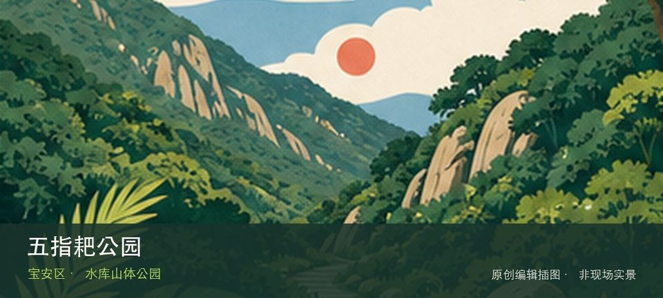

适合谁
适合有基础步行体力、愿意按天气调整路线的人；行动不便者应只选择平缓开放段。

SHENZHEN GUIDE · 161
松岗五指耙水库旁 · 水库山体公园
五指耙公园位于松岗五指耙水库旁，约154公顷的山水公园围绕水库、山林和松岗片区慢行空间展开，游览以开放岸线为准。从五指耙水库景观转向松岗山林步道时，地点的空间、历史或使用方式才会变得清楚。现场不必追求一次走完，先在五指耙水库景观与松岗山林步道之间确定主线，再按体力、日照和天气保留折返方案。山地、滨水或林下路面会随降雨改变，当天预警和开放边界始终比旧轨迹更优先。
WHY GO
适合有基础步行体力、愿意按天气调整路线的人；行动不便者应只选择平缓开放段。
第一次到五指耙公园先把五指耙水库景观设为主目标，再视天气和现场边界决定是否前往松岗山林步道；返程节点应在出发前确定。
公共交通先到松岗五指耙水库旁片区，再以五指耙公园公开参观入口为终点；多入口地点须按计划游线选择入口，并预先锁定返程站点。
导航至五指耙公园官方开放入口配套或邻近正规公共停车场；周末满位即改乘公共交通，不在绿道口、村道或消防通道临停。
10 月至次年 4 月较舒适；4—9 月湿热且雷雨集中，强降雨前后不进入山脊、溪谷、陡坡或低洼路段。
NEARBY IDEAS
 编辑配图·非现场实景
编辑配图·非现场实景
明湖城市公园位于凤凰街道塘明路与根玉路交会处，约59公顷的新型城市公园以开阔水面、草坡和科学城周边公共空间形成光明南部绿心。
 编辑配图·非现场实景
编辑配图·非现场实景
深圳市依波钟表文化博物馆位于金安路产业园，钟表机械、计时原理和品牌制造构成从技术到工业设计的专题，企业园区参观须提前预约。
 编辑配图·非现场实景
编辑配图·非现场实景
新二古村位于新桥街道新二社区，首批历史风貌区之一，传统街巷与宗族建筑嵌在沙井—新桥连续建成区中。